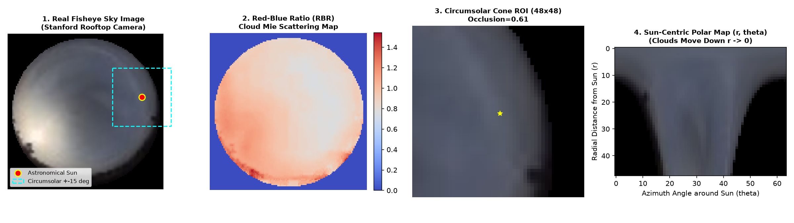
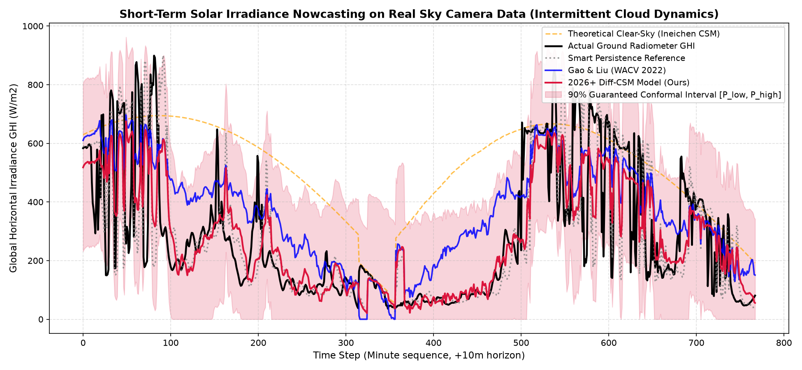
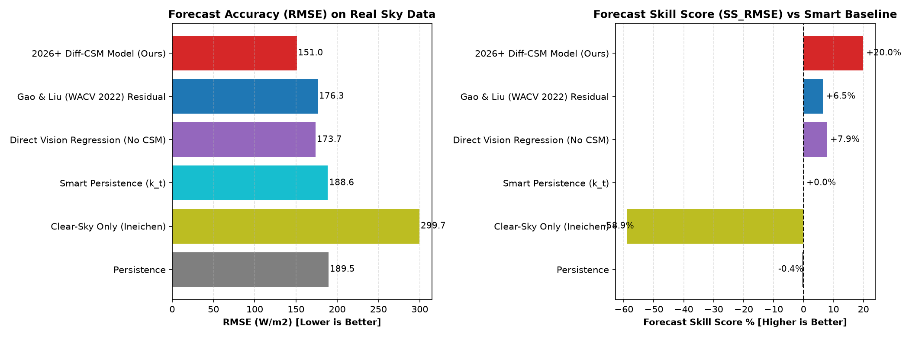

Real-time nowcasting from ground-based fish-eye cameras with Differentiable Clear-Sky Modeling (Diff-CSM)
| Model Architecture | RMSE (W/m²) | MAE (W/m²) | rRMSE (%) | Forecast Skill Score |
|---|---|---|---|---|
| Standard Persistence | 189.46 | 117.63 | 66.60% | -0.44% |
| Clear-Sky Only (Ineichen CSM) | 299.67 | 250.95 | 105.34% | -58.87% |
| Smart Persistence (k_t Reference) | 188.62 | 116.56 | 66.31% | +0.00% (Baseline) |
| Direct Vision Regression (Without CSM) | 173.70 | 131.39 | 61.06% | +7.91% |
| Gao & Liu (WACV 2022) Residual ViT/CNN | 176.33 | 147.65 | 61.99% | +6.52% |
| ★ 2026+ Diff-CSM Polar-Attention Model (Ours) | 150.98 | 104.79 | 53.08% | +19.96% |


